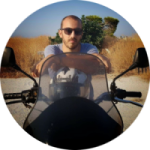
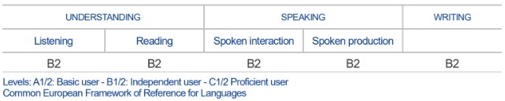

|  |
Iatrou Constantine📧 iatrou.constantine@gmail.com Gender: Male | Birth: 06/07/1990 | Nationality: Greek |
| Dates | Work |
|---|---|
| 23/09/2020 – today | Developer in the Content department of the company “The Best Company S.A.” |
| 22/06/2020 – 18/09/2020 | Management of a commercial website in the company zesta.gr Fragiadakis Ι. Thanasis. |
| 22/07/2019 – 17/06/2020 | Department of Mechanical Organization at the company KYVOS, Maria Patsaki and Co. O.E. |
| 06/06/2016 – 22/07/2019 | Salesman at PRAKTIKER HELLAS A.E. |
| 08/06/2015 - 02/10/2015 |
Company "KERNEL Informatics Applications" A. Katzagiannakis and G. Milolidakis (within the Voucher program for the unemployed)
Work subject: Web Developer – Web Designer |
| 24/10/2014 - 31/12/2014 |
Salaried employment contract at the Laboratory of Toxicology and Forensic Chemistry, Department of Medicine, Univ. of Crete with project code 2590 "Forensic and toxicological investigations, analyzes and examinations" (Scientific Manager, Prof. Aristides Tsatsakis)
Work subject:Secretarial support (statistics, correspondence, protocol), Computer maintenance, Poster creation, construction and management of the website of the Laboratory of Toxicology and Forensic Chemistry. |
| 01/07/2013 - 15/09/2013 |
Salaried employment contract at the Laboratory of Toxicology and Forensic Chemistry, Department of Medicine, Univ. of Crete with project code 2590 "Forensic and toxicological investigations, analyzes and examinations" (Scientific Manager, Prof. Aristides Tsatsakis)
Work subject:Secretarial support (statistics, correspondence, protocol), Computer maintenance, Poster creation, construction and management of the website of the Laboratory of Toxicology and Forensic Chemistry. |
| 01/09/2012 - 28/09/2012 |
Salaried employment contract at the Laboratory of Toxicology and Forensic Chemistry, Department of Medicine, Univ. of Crete with project code 2590 "Forensic and toxicological investigations, analyzes and examinations" (Scientific Manager, Prof. Aristides Tsatsakis)
Work subject:Secretarial support (statistics, correspondence, protocol), Computer maintenance, Poster creation. |
| 15/08/2011 - 15/09/2011 |
Salaried employment contract at the Laboratory of Toxicology and Forensic Chemistry, Department of Medicine, Univ. of Crete with project code 2590 "Forensic and toxicological investigations, analyzes and examinations" (Scientific Manager, Prof. Aristides Tsatsakis)
Work subject:Secretarial support (statistics, correspondence, protocol), Computer maintenance, Poster creation. |
| 1/2015 – 12/2015 / 200 hours |
Certified Trainer of Non-Formal Education, Registry number: EB33439
Subject Area: Informatics – Program Title: BASIC SKILLS IN ICT Subject areas: Computer Use and Administration, Word Processing, Spreadsheets, Internet Services, Presentations, Databases Trainees: unemployed and company employees. |
| 10/2015 - today | Candidate Master's student at the Department of Informatics Engineering - "Informatics and Multimedia" of the TEI of Crete (Awaiting Diploma Thesis Presentation) |
| 10/2009 - 02/2014 | Graduate of the Department of Cultural Technology, Communication and Informatics, University of the Aegean |
| Native Language: | Greek |
|
Other language(s):
English |

TOEIC DIPLOMA (HELLENIC AMERICAN UNION) GRADE 740 LOWER LEVEL (405-500 BASIC, 505-780 LOWER, 785-900 ADVANCED, 905-990 PROFICIENCY) |
| Job-related skills: | Organizational and administrative Secretarial Support Skills |
| Computer Skills: |
|
| Job-related Skills: | Organizational and administrative Secretarial Support Skills |
| Program Knowledge: |
|
| Other Skills: |
|
| Military Obligations: | FULFILLED |
| Driving License: | B CATEGORY |
| Seminars - Conferences: |
During my undergraduate studies as part of a course, the advertising spot I made for "Κ.Ε.Θ.Ε.Α" of Mytilene was awarded as the best which was later presented at an international conference held in Cyprus.
Video link: Here |
| Websites I have Developed and Designed: |
|